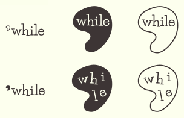
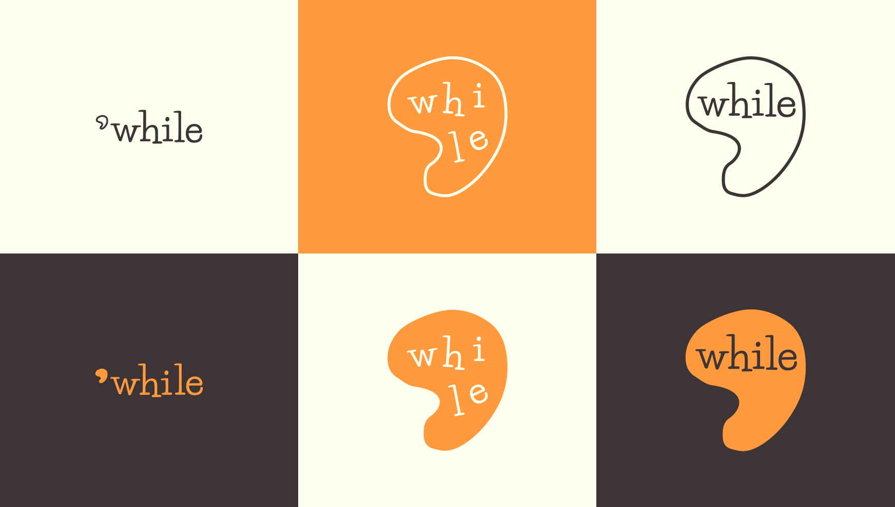

Do Not Stretch
Scale the supplied artwork proportionally.
02 / Identity
The custom apostrophe, rounded contours, warm palette, and two type families work as one system. Use the original artwork, and let the details stay familiar.
The custom apostrophe and wordmark form one unit. Preserve letterforms, spacing, proportions, and the relationship between them. Never recreate the logo by typing the brand name.
Use the apostrophe height as the clear-space unit around the horizontal wordmark.
Original SVG ↗

Scale the supplied artwork proportionally.
Chubbo supports headlines. It does not replace the logo.
Keep its original contour and relationship to the letters.
Avoid shadows, gradients, outlines, and decorative additions.
Use the approved compositions rather than creating new letter arrangements.
The PDF includes 2.50, 1.75, 1.25, and 0.88 inch print test sizes. These are test sizes, not approved minimums. Print at Actual Size and check the apostrophe, counters, and fine details on the final stock.
Match perceived visual weight, preserve both official artworks, and retain their clear space. Equal emphasis does not require equal bounding boxes. Caption Aesop and Slowear concepts as speculative collaborations.
Use charcoal on cream or orange for essential text. Orange on cream is reserved for nonessential graphic moments.
Take Your Sweet Time.
Digital text baseline: 4.5:1 for normal text, 3:1 for large text. Logo artwork is exempt but must remain recognizable. Check print conversions with a physical proof on the chosen stock.
Display
Aa Bb Cc
0123456789
Headlines, expressive statements,
and course names.
Functional
Aa Bb Cc
0123456789
Body text, navigation, labels,
and the tagline.
Chubbo / Display, headlines, and course names